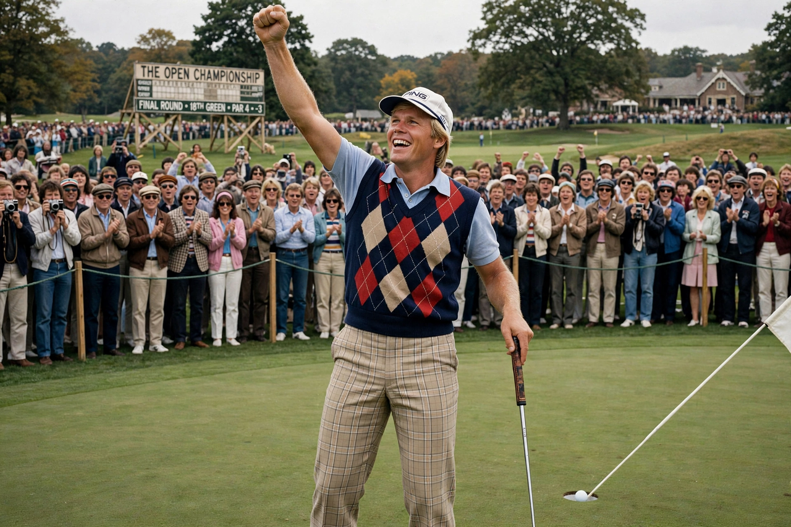

From Wikipedia, the free encyclopedia
| Jack Nicklaus | |
|---|---|
 Jack Nicklaus raising his putter on the 17th green at Augusta during his 1986 Masters victory | |
| Born | 21 January 1940, Columbus, Ohio, US |
| Nickname | The Golden Bear |
| Turned professional | 1961 |
| Major championships | 18 (record): 6 Masters, 5 PGA, 4 U.S. Open, 3 The Open |
| PGA Tour wins | 73 |
Jack William Nicklaus (born 1940), nicknamed "the Golden Bear", is an American retired professional golfer widely regarded as the greatest the game has produced. Across a career spanning four decades he won 18 major championships — more than any other player — and finished runner-up in majors a further 19 times. His longevity, power off the tee and unshakeable putting under pressure set records that Tiger Woods, second with 15 majors, has spent a career chasing.
Nicklaus first announced himself by winning the U.S. Amateur twice and finishing second at the 1960 U.S. Open as a 20-year-old amateur. Turning professional in 1961, he beat Arnold Palmer in a playoff for the 1962 U.S. Open, the first of his majors. He completed the career Grand Slam by age 26 and won at least one major in most years through the 1970s, duelling with Palmer, Gary Player, Lee Trevino and Tom Watson. His most celebrated triumph came at the 1986 Masters, where at 46 he shot a final-round 65 — including 30 on the back nine — to win his sixth green jacket, the oldest Masters champion in history.
After retiring from regular competition Nicklaus built one of golf's foremost course-design companies, responsible for hundreds of courses worldwide, including Muirfield Village in Ohio, host of his Memorial Tournament. He was a playing and non-playing captain in the Ryder Cup and Presidents Cup, and his 18 majors remain the sport's defining benchmark.
Categories: Jack Nicklaus | American male golfers | World Golf Hall of Fame inductees